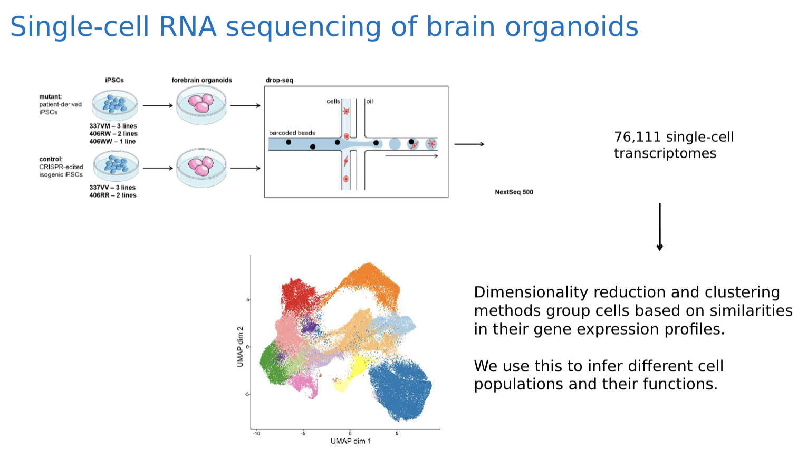

NRI Group Update 1
Contents
NRI Group Update 1¶
Team Information¶
Members:
Sara Mandic
Jake Stenger
Nancy Zha
Sponsor:
Stella Glasauer
Mentor:
Megan Elcheikhali
Research Lab:
Neuroscience Research Institute
Project Description:¶
This project aims to model neurodegeneration in brain organoids by single-cell RNA sequencing. Through the use of statistical methods we are aiming to compare differences in gene expression between control and mutant brain organoids. In addition we aim to identify cell populations that are more or less abundant in the mutant brain organoids. Thus, we are aiming to gain insight in disease mechanisms that lead to neurodegeneration.
Background:¶
Listed below are some definitions and concepts that are relevant to our project.
Biological Terminology:
DNA: Carries the information to make a functional product (the protein)
RNA: Acts as a messenger to carry the information to the ribosome
Protein: Functional units of cells that consist of amino acids
Brain Organoids: Structures that can be grown in a dish that mimic aspects of the real human brain
Single Cell RNA Sequencing: Provides transciptional profiling of thousands of individual cells which allows people to understand at the single-cell level what genes are expressed, in what quantities, and how they differ across thousands of cells.

Drop-seq: a single-cell sequencing technique that isolates single cells in droplets along with a barcoded bead. This bead has lots of molecular handles that pick up mRNA from the cell. Each handle contains two unique codes: one for the entire cell, and one for each handle. This way for each unique sequence read corresponds to a unique cell and a unique mRNA strand
MAPT mutations:
Microtubule-associated protein tau
causes heterogenous forms of frontotemporal lobar degeneration with taupathy (FLTD-Tau)
patients with FLTD-Tau exhibit a broad range of neurological deficits including movement and motor neuron disease
Dimensionality reduction methods:
Principal Component Analysis (PCA):
A linear method that can reduce high-dimensional data into fewer dimensions while preserving as much information as possible (for a linear method)
Finds a sequence of orthogonal vectors ranked by how well they explain variance in the data
UMAP
uses graph layout algorithms to arrange data in low-dimensional space
constructs a high dimensional graph representation of the data then optimizes a low-dimension graph to be as structrually similar as possible
t-SNE
nonlinear dimensionality reduction
mostly used to understand high-dimensional data and project it into low-dimensional space
finds a 2-dimensional mapping such that the difference in point-neigborhood distance is minimized across points
Clustering
As opposed to an algorithm like k-means which requires a set number of clusters, many single-cell researchers use the Louvain algorithm:
Computes L2 distances between datapoints, links each cell to its k-closest cells
Determines clusters by neighborhoods of highly connectec cells
Data Exploration¶
We haven’t got our data yet and we are using the pbmc dataset from Seurat for simulations. In our real dataset, observations are single cells collected from scRNA-sequenced brain organoids. The organoids were generated using the “Pasca” method. Data collectors of the lab dissociated the organoids and utilized a technique called drop-seq to collect single cell transcriptomes data. The main variables of our data set are MAPT mutant and control organoids derived from different induced pluripotent stem cell lines. In total, we have 6 mutant lines and 5 control lines. THe 6 mutant lines include 3 V337M heterozygous mutant lines, 2 R406W heterozygous mutant lines, and 1 R406W homozygous mutant line. Another variable in the data set is different organoid ages with 2, 3, 4, 6, and 8 months.
We are working with partially processed rather than completely raw data: the data has been “demultiplexed” so that count duplicates introduced by PCR sequencing are dropped. However, we perform quality control (dropping errenous datapoints caused by the testing method), preprocessing (normalization, log-transformation, scaling), dimension reduction, and downstream analysis.
Single-cell data is generally high-dimensional: there are more unique genes measured (features) than cells measured. This means that feature selection and dimension-reduction techniques are key
Goals¶
Our overarching goal is to use brain organoids as models of the developing brain, and find key differences in gene expression and cell proliferation that are caused downstream by mutations in the MAPT gene
Do achieve this, we will:
Identify groupings of similar cells in brain organoids: use preprocessing, dimensionality reduction, clustering and visualization to find cell groupings from high dimensional gene expression data
Determine group identities by comparing group gene expression to literature and databases
Using single-cell data from brain organoids with MAPT mutations vs mutation-removed controls, we want to compare differences in the population and features of the cell-type clusters
All of this requires data integration techniques to account for differences between batches and experiments to account for technical covariates
References:
Drop-seq technique: Macosko et al. (2015). Highly Parallel Genome-wide Expression Profiling of Individual Cells Using Nanoliter Droplets. Cell, 161(5), 1202-1214.
Pasca method: Pasca et al. (2015). Functional cortical neurons and astrocytes from human pluripotent stem cells in 3D culture. Nature Methods, 12, 671–678.
Yoon et al. (2019).Reliability of human cortical organoid generation. Nature Methods, 16, 75-78.Current best practices in single-cell RNA-seq analysis: a tutorial
A Comprehensive Resource for Induced Pluripotent Stem Cells from Patients with Primary Tauopathies
Ethics¶
Regarding ethics, our project has some unique considerations. Cell samples are taken from patients with disorders such as Alzheimer’s, which are then used to generate stem cell lines that are used to create brain organoids. Relevant diagnoses as well as patient gender are recorded, but location and other information is completely anonymized. The patient’s entire genome is preserved in the stem cell line, but we are only interested in mutations to one gene, so our digital dataset doesn’t include all their genetic information.
Some have also called into question the ethics of generating brain organoids. They are sometimes thought of as “brains in a vat” and people wonder if they could gain conciousness. At this stage, it seems like these fears are unfounded. Synapse formation is limited, and we are seeking to study cell development, not the action potentials that actually make a brain function. Brain organoids today are lower in complexity than mice brains and also receive no sensory input. However, looking into the future as the technology develops it’s important to keep ethics in mind.